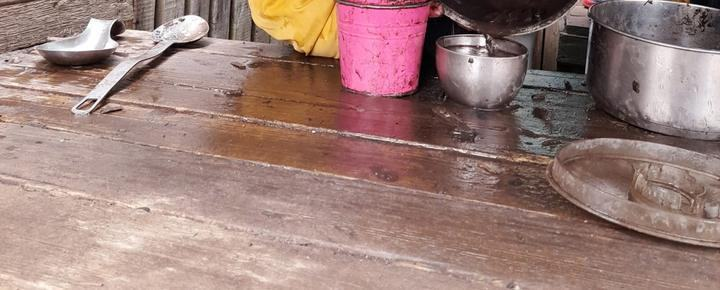
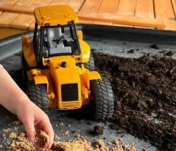
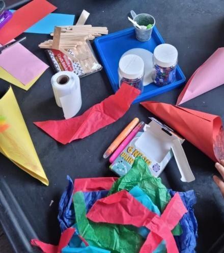

Our nursery
Small but perfectly formed: five playrooms, two large gardens, an outdoor playroom called the Baa'rn, and a forest down the road.
A day at Sheephouse
Every day is child-led and play-based, so no two days are the same. These are the fixed points.
We open at 7am and close at 6pm. Half-day sessions run from 7am to 1pm, or 1pm to 6pm.
- 7amDoors open
- BreakfastIn the dining room
- Play, inside and outChildren free-flow between the playroom and the garden, in all weathers
- Two-course lunchChildren serve themselves, and seconds are common
- 1pmHalf-day sessions change over
- Afternoon snack
- 6pmHome time
Our rooms
We use our spaces flexibly. Each child moves on when it suits them.
-
Babies and young toddlers
Up to 24 to 30 monthsTwo lovely spaces where our smallest babies explore fabrics, pine cones, brushes and sponges, and sand and water trays full of messy textures.
Older babies get to be adventurous, with risky and messy play, and time to sing, mark-make and relax. Babies have their own private garden.
-
Toddlers and pre-school
24 to 30 months to 5 yearsTwo bright, airy spaces at the front of the nursery, where older toddlers and pre-schoolers shape their own play.
Children have direct access to the garden and can choose to be inside or out.
Outdoors
We get outside in all weathers.
- Two large gardens. A mud kitchen, trees to climb, loose parts to build with, and a tee-pee for chilling out.
- The Baa'rn. Our outdoor playroom, with natural materials. Children learn to use hammers and saws, and to weave and whittle.
- The forest, every week. Our team take our youngest and older children to the local forest each week. Four of our team have done the forest kindergarten course.
- Out and about. Walks to see wildlife, and trips to the library, the parks and the community hub.


Out of school club
For children in P1 to P7: full of adventure and bursting with fun.
- Breakfast club
- From 7am in term time
- After school
- From the end of the school day until 6pm
- Schools
- We drop off and collect at Falla Hill Primary and St John the Baptist Primary
- Holidays
- Phone to check holiday club dates
Inventors, artists, sports fans or gardeners: we have plenty to keep them busy.

Additional support
We're an inclusive nursery, and we care for children with a range of additional support needs.
Our senior team work closely with local schools, West Lothian Council's additional support needs officer, health visitors, speech and language therapists, pre-school home teaching and educational psychologists.
If you think your child might need extra support, talk to us at your visit.
Families and community
We work in partnership with families, with links between nursery and home. We also work with our local care home and sheltered housing, the library, the community hub, local cafés and businesses, and other nurseries and schools nearby.
Children and families even help us recruit new staff.
Inspection and awards
Our Care Inspectorate grades
- How good is our care, play and learning?5 Very good
- How good is our setting?5 Very good
- How good is our leadership?5 Very good
- How good is our staff team?5 Very good
The inspection made no requirements.
Innovation Award, 2021From the Scottish Government and the Children and Young People Improvement Collaborative, for using our outdoor space to help children learn.
Who we are
Sheephouse opened in 2012. Our aim is a home from home that is safe, secure and stimulating, where children, families and the team respect each other.
We follow Scotland's national guidance for the early years, Realising the Ambition.